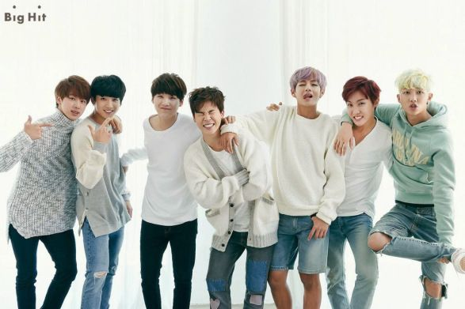
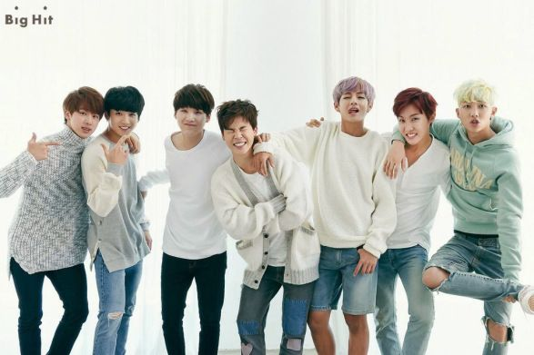

FACTS ABOUT THEM

FACTS ABOUT THEM

- Jimin says that he might be addicted to practicing; he once practiced so much that he only got 3 hours of sleep and even had a nosebleed!
- Rap Monster said that he taught himself English…Wow…
- Suga would accidentally use satoori if he gets really nervous
- Not one single member of BTS is from Seoul. Rap Monster is from Ilsan, J-Hope/Suga from Daegu, and Jimin/Jungkook from Busan.
- Jimin attended Busan High School of Arts in the contemporary dance department. His teacher advised him to audition for an Entertainment company. "I really liked contemporary dance because we could express our feelings with our body."
- Even Jungkook is the maknae of the group, he is the strongest out of them all. He carried Jimin during a dance break in their debut song "No More Dream".
- BTS fans say that J-Hope looks like a horse because of his nose. His face is also 27cm long.
- The ship name for Jimin and Jungkook is "JiKook". Jimin said that he likes Jungkook a lot because he thinks that he’s a very cute maknae. Jungkook said that he acts like he doesn't really like Jimin because he's shy.
Sources:
- https://en.wikipedia.org/wiki/BTS_(band)
- http://1.bp.blogspot.com/-mE9YwlzCUos/VMd5-BlXmAI/AAAAAAAAATQ/2tTMyhw60s0/s1600/B7ThnmaCIAA412y.jpg
- http://cdn.playbuzz.com/cdn/aaf23335-30fa-4f23-85de-c3eb3f1ffc89/a72dc920-a2c7-4e2d-8d4a-01a08a30d5b9.jpg
- https://s-media-cache-ak0.pinimg.com/736x/51/8e/42/518e42e646f421e451f78453ea694a04.jpg
- https://s-media-cache-ak0.pinimg.com/736x/7a/43/12/7a431206a4576abe731cff79748517e2.jpg
-
http://misskpop.weebly.com/btsbangtan-boys-profile.html
-
https://www.google.com.ph/url?sa=i&rct=j&q=&esrc=s&source=images&cd=&cad=rja&uact=8&ved=0ahUKEwiI4vSxxfDSA
hWCkpQKHXtWDEIQjRwIBw&url=http%3A%2F%2Fallthe2048.com%2Fcommunity-games%2Fbts-rap-monster-2048.html&psig=A
FQjCNH5UrUchok8NGIVrK5V_ETCayDfrw&ust=1490493007885908
-
https://www.google.com.ph/url?sa=i&rct=j&q=&esrc=s&source=images&cd=&cad=rja&uact=8&ved=0ahUKEwiL6effxfDSA
hVCo5QKHWTrCXsQjRwIBw&url=https%3A%2F%2F
- www.pinterest.com%2Fmariannebruno%2Fbts-kim-seok-jin%2F&psig=AFQjCNG3i8507bwOc1OEYfmFxHyY7yYPVA&ust=149
0493094762077
-
www.pinterest.com%2Fpin%2F852024823223161112%2F&psig=AFQjCNE7SEW
iRTDlY3N8_PiejauTVaT7kQ&ust=1490493236567960
- www.pinterest.com%2Fpin%2F504051383273108601%2F&psig=AFQjCNGafV6AMF
qBNSlujygFhpUbD4rSaQ&ust=1490493348986304
-
https://www.google.com.ph/url?sa=i&rct=j&q=&esrc=s&source=images&cd=&cad=rja&uact=8&ved=0ahUKEwi6_IiEx_DSAhW
Fq5QKHZkzAE8QjRwIBw&url=http%3A%2F%2Ffavim.com%2Fimage%2F2344400%2F&psig=AFQjCNExi_Ew-upDtPpWcFOTp8XAIJ8zIA&
ust=1490493451992140
-
www.sbs.com.au%2Fpopasia%2Fblog%2F
2016%2F09%2F02%2Fbts-jungkook-talks-about-his-birthday-his-dreams-more-new-interview&psig
=AFQjCNHXiArQj78mqcVnX1AC707xrfi7pA&ust=1490493508180690
-
www.kpopmap.com%2Fkpop-idol-with-fabulous-
airport-fashion-bts-v%2F&psig=AFQjCNESPGGriuvRE4ScIQCqIfg2r9Lqjw&ust=1490493569024457
-
https://www.nowkpop.com/2016/04/05/17-facts-you-didnt-know-about-bts/